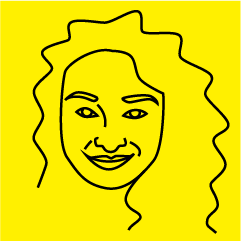
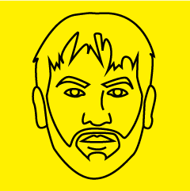
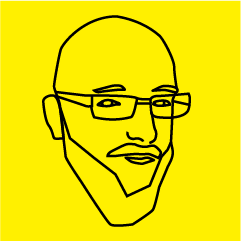

O konferencji
Jesteśmy młodszą, wiosenną, szczuplejszą siostrą konferencji AgileByExample. Tradycyjnie w sobotę po południu mamy pół dnia prezentacji i warsztatów zakończonych networkingiem przy piwie.
W tym roku trafił nam się wyjątkowy zestaw tematów. Mało będzie o tym, o czym zwykle mówi się w kontekście agile — będziemy eksplorować jego granice!
Zapraszamy serdecznie, będzie to zupełnie wyjątkowe pół dnia… i wieczór networkingowy też.
Gdzie?
Akademia Finansów i Biznesu VISTULA
Stokłosy 3,
Warszawa
Kto?
-

Four Metaphors for Lean
Mary Poppendieck www
Mary Poppendieck started her career as a process control programmer, moved on to manage the IT department of a manufacturing plant, and then ended up in product development, where she was both a product champion and department manager.
Mary considered retirement 1998, but instead found herself managing a government software project where she first encountered the word "waterfall." When Mary compared her experience in successful software and product development to the prevailing opinions about how to manage software projects, she decided the time had come for a new paradigm. She wrote the award-winning book "Lean Software Development: An Agile Toolkit" in 2003 to explain how the lean principles from manufacturing offer a better approach to software development.
Over the past several years, Mary has found retirement elusive as she lectures and teaches classes with her husband Tom. Based on their on-going learning, they wrote a second book, "Implementing Lean Software Development: From Concept to Cash" in 2006, a third, "Leading Lean Software Development: Results are Not the Point" in 2009, and a fourth book, "The Lean Mindset: Ask the Right Questions" in 2013. A popular writer and speaker, Mary continues to bring fresh perspectives to the world of software development. -

Warsztat: Efektywni czy zajęci - Symulacja Lean
ProCognita www
Od 2010 roku wspieramy ludzi w tworzeniu uczących się organizacji i dostarczaniu niesamowitych produktów. Dzielimy się wiedzą i doświadczeniem poprzez szkolenia, mentoring, wykłady i warsztaty. Jako jedyni organizujemy szkolenia Certified ScrumMaster, Certified Scrum Product Owner i Certified LeSS Basics po polsku. Wspólnie przeszkoliliśmy ponad 2000 osób w 6 krajach na dwóch kontynentach.
Współpracujemy z kilkoma międzynarodowymi organizacjami zrzeszającymi ekspertów Agile i Lean takimi jak Scrum Alliance i LeSS Company. Nasi partnerzy i przyjaciele zapewniają nam wsparcie i wiedzę, oraz szerszą perspektywę pracy z klientem. Możecie nas spotkać na międzynarodowych konferencjach i spotkaniach lokalnych społeczności Agile i Lean. -

O podglądaniu, patrzeniu, podpatrywaniu i widzeniu
Michał Dworczyk LinkedIn
Entuzjasta życia, projektant startupów, fotograf, aktor. Poszukiwacz rozwiązań prostych, lecz nieoczywistych. Zwolennik Deep Thinking, co lubi tłumaczyć jako myślenie o myśleniu. Od ponad dwudziestu lat jest obecny w strukturach zarządzania projektami, marketingu, reklamy i PR.
Studiował w Centrum kształcenia kadr kierowniczych DOSKO na wydziale Public Relations, w Państwowej wyższej szkole Filmowej Telewizyjnej i Teatralnej w Łodzi.
Jest certyfikowanym coachem International Coaching Community. no. 11488, Praktykiem Neurolingwistyki - The Society of Neuro Linguistic Programing, ukończył również kurs: Re-evaluating Life Story Certification authority Christina Hall, Ph.D., NLP Meta-Master Trainer.
Pomaga ludziom osiągać cele, odkrywać inne sposoby widzenia świata. -

Jak poskromić Ciemną Stronę Mocy?
Dorota Jaworska LinkedIn
Project Manager/Product Owner.
Pracowała w korporacjach i startupach. Z branżą IT związana od 10 lat. Fanka czarnej kawy, retrospekcji i szukania dziury w całym.
Prywatnie entuzjastka małych szczeniaczków. -

Kiedy nie warto używać Continuous Integration / Continuous Delivery?
Marcin Gozdalik LinkedIn
ex-CTO, ex-co-founder, obecnie konsultant w 9LivesData oraz head of engineering w Starfish Storage
Rozkład jazdy
| Time | Slot | Description |
|---|---|---|
| 13h45 | Startujemy | Bardzo prosimy przybywać na czas. |
|
Mary Poppendieck Four Metaphors for Lean |
Sometimes lean principles are easier to understand when we find them operating in completely unexpected places. This talk will take you to marketplaces around the world, on arctic expeditions, down whitewater rapids, and into research labs to see lean principles in action. Because sometimes the ideas that seem so counterintuitive in our daily lives become completely obvious when the game has changed. | |
|
ProCognita Warsztat: Efektywni czy zajęci - Symulacja Lean |
Masz uczucie, że wszyscy w twojej firmie jesteście bardzo zajęci, ale rezultatów nie widać? Zapraszamy Cię na nasz warsztat, gdzie poprzez symulację zobaczymy co powoduje największe problemy tradycyjnych organizacji. Spróbujemy je też zaadresować, używając narzędzi Lean, takich jak Kanban i poszukiwanie strat. Oczywiście nasze wnioski przeniesiemy na grunt tworzenia oprogramowania, tak abyście mogli je zastosować w poniedziałek po konferencji. ps. Mamy Lego i nie zawahamy się go użyć. :) |
|
| Lunch | Każdy płaci za siebie. Kantyna Vistuli da radę nas obsłużyć. | |
|
Michał Dworczyk O podglądaniu, patrzeniu, podpatrywaniu i widzeniu |
Tym razem pokażę kilka zdjęć. Opowiem o tym co w nich widzę. Dlaczego są właśnie takie jakimi je zobaczycie? O perspektywie w fotografii i w życiu. O próbie rezygnacji z ustawień domyślnych... Możliwe, że im mniej teraz napiszę, tym przyjemniej będzie Wam patrzeć i słuchać... Może tylko patrzeć, a może tylko słuchać? |
|
|
Dorota Jaworska Jak poskromić Ciemną Stronę Mocy? |
Co zrobić kiedy osoba z Twojego zespołu cierpi na depresję? Czego na pewno nie robić? Jak pomóc Twojemu współpracownikowi i zorganizować pracę zespołu aby dowozić? Wiele się mówi o depresji i o stanach lękowych, ale nikt nie przygotowuje nas, zarządzających ludźmi, do mierzenia się z takim sytuacjami w pracy. Na podstawie własnych doświadczeń i obserwacji, chcę dotknąć trudnego tematu o którym się nie mówi na głos. |
|
|
Marcin Gozdalik Kiedy nie warto używać Continuous Integration / Continuous Delivery? |
Dawno temu (w 2000 roku!) na liście "The Joel Test: 12 Steps to Better Code" Joel Spolsky na pierwszym miejscu umieścił pytanie "Do you use source control?". Dawno nie spotkałem projektu który już tutaj odpadał i odpowiadał "nie", chociaż jeszcze parę lat temu takie projekty widziałem. Na trzecim miejscu było "Do you do daily builds?". Znam wiele projektów dzisiaj, które ciągle przy tym pytaniu odpadają. Gdyby zapytać o Continuous Integration, Deployment albo Delivery jeszcze mniej projektów będzie mogło podnieść łapkę w górę. Chciałbym opowiedzieć co pomogło nam dojść do 10 buildów dziennie w zespole siedmioosobowym i kiedy nie warto używać CI/CD. | |
| ~19h30 | Afterparty | W pobliżu… |
Sponsorzy
Partnerzy
Partnerzy medialni
Organizatorzy
-

Ewa Koprowska
-

Piotr Radaj
-

Mateusz Srebrny
-

Łukasz Szóstek
-

Magdalena Walczak
-

Michał Koprowski
-

Piotr Szczygieł